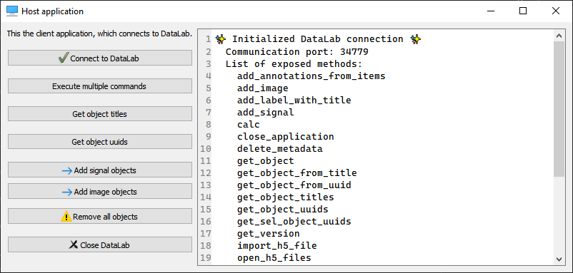
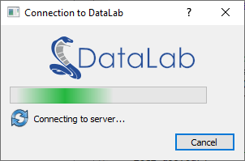

Contrôle à distance (XML-RPC)#
Note
Pour les nouveaux projets, nous recommandons d’utiliser l” API Web au lieu de XML-RPC. L’API Web offre de meilleures performances pour les grands tableaux, une authentification basée sur des jetons et une compatibilité avec les environnements de navigateur (WASM/Pyodide).
XML-RPC reste disponible pour la compatibilité avec les intégrations existantes.
DataLab peut être contrôlé à distance en utilisant le protocole XML-RPC qui est nativement supporté par Python (et beaucoup d’autres langages). Le contrôle à distance permet d’accéder aux principales fonctionnalités de DataLab à partir d’un processus séparé.
Note
Si vous recherchez une solution alternative légère pour contrôler DataLab à distance (c’est-à-dire sans avoir à installer l’ensemble du package DataLab et ses dépendances sur votre environnement), vous pouvez utiliser le package Sigima qui fournit un simple client distant pour DataLab. Pour l’installer, il suffit d’exécuter : pip install sigima.
Depuis un IDE#
DataLab peut être contrôlé à distance depuis un IDE (par exemple Spyder ou tout autre IDE, ou même un Jupyter Notebook) qui exécute un script Python. Il permet de se connecter à une instance de DataLab en cours d’exécution, d’ajouter un signal et une image, puis d’exécuter des calculs. Cette fonctionnalité est exposée par la classe RemoteProxy fournie dans le module datalab.control.proxy.
Depuis une application tierce#
DataLab peut également être contrôlé à distance depuis une application tierce, dans le même but.
Si l’application tierce est écrite en Python 3, elle peut directement utiliser la classe RemoteProxy comme mentionné ci-dessus. Depuis un autre langage, c’est également réalisable, mais cela nécessite d’implémenter un client XML-RPC dans ce langage en utilisant les mêmes méthodes de serveur proxy que dans la classe RemoteProxy.
Les données (signaux et images) peuvent également être échangées entre DataLab et l’application cliente distante, dans les deux sens.
L’application cliente distante peut être écrite dans n’importe quel langage qui prend en charge XML-RPC. Par exemple, il est possible d’écrire une application cliente distante en Python, Java, C++, C#, etc. L’application cliente distante peut être une application graphique ou une application en ligne de commande.
L’application cliente distante peut être exécutée sur le même ordinateur que DataLab ou sur un ordinateur différent. Dans ce dernier cas, l’application cliente distante doit connaître l’adresse IP de l’ordinateur exécutant DataLab.
L’application cliente distante peut être exécutée avant ou après DataLab. Dans ce dernier cas, l’application cliente distante doit essayer de se connecter à DataLab jusqu’à ce qu’elle réussisse.
Fonctionnalités prises en charge#
Les fonctionnalités prises en charge sont les suivantes :
Basculer vers le panneau de signal ou d’image
Supprimer tous les signaux et images
Enregistrer la session en cours dans un fichier HDF5
Ouvrir des fichiers HDF5 dans la session en cours
Parcourir un fichier HDF5
Ouvrir un signal ou une image à partir d’un fichier
Ajouter un signal
Ajouter une image
Obtenir la liste des objets
Exécuter un calcul avec des paramètres
Note
Les objets signal et image sont décrits dans cette section : Modèle de données interne.
Quelques exemples sont fournis pour aider à implémenter une telle communication entre votre application et DataLab :
Voir le module :
datalab.tests.features.control.remoteclient_app_testVoir le module :
datalab.tests.features.control.remoteclient_unit

Capture d’écran du test de l’application cliente distante (datalab.tests.features.control.remoteclient_app_test)#
Exemples#
Lorsque vous utilisez Python 3, vous pouvez utiliser directement la classe RemoteProxy comme dans les exemples cités ci-dessus ou ci-dessous.
Voici un exemple en Python 3 d’un script qui se connecte à une instance de DataLab en cours d’exécution, ajoute un signal et une image, puis exécute des calculs (la structure de cellule du script le rend pratique à utiliser dans l’IDE Spyder):
"""
Example of remote control of DataLab current session,
from a Python script running outside DataLab (e.g. in Spyder)
Created on Fri May 12 12:28:56 2023
@author: p.raybaut
"""
# %% Importing necessary modules
# NumPy for numerical array computations:
import numpy as np
# DataLab remote control client:
from sigima.client import SimpleRemoteProxy as RemoteProxy
# %% Connecting to DataLab current session
proxy = RemoteProxy()
# %% Executing commands in DataLab (...)
z = np.random.rand(20, 20)
proxy.add_image("toto", z)
# %% Executing commands in DataLab (...)
proxy.toggle_auto_refresh(False) # Turning off auto-refresh
x = np.array([1.0, 2.0, 3.0])
y = np.array([4.0, 5.0, -1.0])
proxy.add_signal("toto", x, y)
# %% Executing commands in DataLab (...)
proxy.calc("derivative")
proxy.toggle_auto_refresh(True) # Turning on auto-refresh
# %% Executing commands in DataLab (...)
proxy.set_current_panel("image")
# %% Executing a lot of commands without refreshing DataLab
z = np.random.rand(400, 400)
proxy.add_image("foobar", z)
with proxy.context_no_refresh():
for _idx in range(100):
proxy.calc("fft")
Voici une réimplémentation de cette classe en Python 2.7 :
# Copyright (c) DataLab Platform Developers, BSD 3-Clause license, see LICENSE file.
"""
DataLab remote controlling class for Python 2.7
"""
import io
import os
import os.path as osp
import socket
import sys
import ConfigParser as cp
import numpy as np
from guidata.userconfig import get_config_dir
from xmlrpclib import Binary, ServerProxy
def array_to_rpcbinary(data):
"""Convert NumPy array to XML-RPC Binary object, with shape and dtype"""
dbytes = io.BytesIO()
np.save(dbytes, data, allow_pickle=False)
return Binary(dbytes.getvalue())
def get_datalab_xmlrpc_port():
"""Return DataLab current XML-RPC port"""
if sys.platform == "win32" and "HOME" in os.environ:
os.environ.pop("HOME") # Avoid getting old WinPython settings dir
fname = osp.join(get_config_dir(), ".DataLab", "DataLab.ini")
ini = cp.ConfigParser()
ini.read(fname)
try:
return ini.get("main", "rpc_server_port")
except (cp.NoSectionError, cp.NoOptionError):
raise ConnectionRefusedError("DataLab has not yet been executed")
class RemoteClient(object):
"""Object representing a proxy/client to DataLab XML-RPC server"""
def __init__(self):
self.port = None
self.serverproxy = None
def connect(self, port=None):
"""Connect to DataLab XML-RPC server"""
if port is None:
port = get_datalab_xmlrpc_port()
self.port = port
url = "http://127.0.0.1:" + port
self.serverproxy = ServerProxy(url, allow_none=True)
try:
self.get_version()
except socket.error:
raise ConnectionRefusedError("DataLab is currently not running")
def get_version(self):
"""Return DataLab public version"""
return self.serverproxy.get_version()
def close_application(self):
"""Close DataLab application"""
self.serverproxy.close_application()
def raise_window(self):
"""Raise DataLab window"""
self.serverproxy.raise_window()
def get_current_panel(self):
"""Return current panel"""
return self.serverproxy.get_current_panel()
def set_current_panel(self, panel):
"""Switch to panel"""
self.serverproxy.set_current_panel(panel)
def reset_all(self):
"""Reset all application data"""
self.serverproxy.reset_all()
def toggle_auto_refresh(self, state):
"""Toggle auto refresh state"""
self.serverproxy.toggle_auto_refresh(state)
def toggle_show_titles(self, state):
"""Toggle show titles state"""
self.serverproxy.toggle_show_titles(state)
def save_to_h5_file(self, filename):
"""Save to a DataLab HDF5 file"""
self.serverproxy.save_to_h5_file(filename)
def open_h5_files(self, h5files, import_all, reset_all):
"""Open a DataLab HDF5 file or import from any other HDF5 file"""
self.serverproxy.open_h5_files(h5files, import_all, reset_all)
def import_h5_file(self, filename, reset_all):
"""Open DataLab HDF5 browser to Import HDF5 file"""
self.serverproxy.import_h5_file(filename, reset_all)
def load_from_files(self, filenames):
"""Open objects from files in current panel (signals/images)"""
self.serverproxy.load_from_files(filenames)
def add_signal(
self,
title,
xdata,
ydata,
xunit=None,
yunit=None,
xlabel=None,
ylabel=None,
group_id="",
set_current=True,
):
"""Add signal data to DataLab"""
xbinary = array_to_rpcbinary(xdata)
ybinary = array_to_rpcbinary(ydata)
p = self.serverproxy
return p.add_signal(
title, xbinary, ybinary, xunit, yunit, xlabel, ylabel, group_id, set_current
)
def add_image(
self,
title,
data,
xunit=None,
yunit=None,
zunit=None,
xlabel=None,
ylabel=None,
zlabel=None,
group_id="",
set_current=True,
):
"""Add image data to DataLab"""
zbinary = array_to_rpcbinary(data)
p = self.serverproxy
return p.add_image(
title,
zbinary,
xunit,
yunit,
zunit,
xlabel,
ylabel,
zlabel,
group_id,
set_current,
)
def get_object_titles(self, panel=None):
"""Get object (signal/image) list for current panel"""
return self.serverproxy.get_object_titles(panel)
def get_object(self, nb_id_title=None, panel=None):
"""Get object (signal/image) by number, id or title"""
return self.serverproxy.get_object(nb_id_title, panel)
def get_object_uuids(self, panel=None, group=None):
"""Get object (signal/image) list for current panel"""
return self.serverproxy.get_object_uuids(panel, group)
def test_remote_client():
"""DataLab Remote Client test"""
datalab = RemoteClient()
datalab.connect()
data = np.array([[3, 4, 5], [7, 8, 0]], dtype=np.uint16)
datalab.add_image("toto", data)
if __name__ == "__main__":
test_remote_client()
Boîte de dialogue de connexion#
Le package DataLab fournit également une boîte de dialogue de connexion qui peut être utilisée pour se connecter à une instance de DataLab en cours d’exécution. Elle est exposée par la classe datalab.widgets.connection.ConnectionDialog.

Capture d’écran de la boîte de dialogue de connexion (datalab.widgets.connection.ConnectionDialog)#
Exemple d’utilisation :
# Copyright (c) DataLab Platform Developers, BSD 3-Clause license, see LICENSE file.
"""
DataLab Remote client connection dialog example
"""
# guitest: show,skip
from guidata.qthelpers import qt_app_context
from qtpy import QtWidgets as QW
from datalab.control.proxy import RemoteProxy
from datalab.widgets.connection import ConnectionDialog
def test_dialog():
"""Test connection dialog"""
proxy = RemoteProxy(autoconnect=False)
with qt_app_context():
dlg = ConnectionDialog(proxy.connect)
if dlg.exec():
QW.QMessageBox.information(None, "Connection", "Successfully connected")
else:
QW.QMessageBox.critical(None, "Connection", "Connection failed")
if __name__ == "__main__":
test_dialog()
API publique#
- class datalab.control.remote.RemoteClient[source]#
Objet représentant un proxy/client vers le serveur XML-RPC de DataLab. Cet objet est utilisé pour appeler les fonctions de DataLab à partir d’un script Python.
Exemples
Voici un exemple simple de l’utilisation de RemoteClient dans un script Python ou dans un notebook Jupyter :
>>> from datalab.remote import RemoteClient >>> proxy = RemoteClient() >>> proxy.connect() Connecting to DataLab XML-RPC server...OK (port: 28867) >>> proxy.get_version() '1.0.0' >>> proxy.add_signal("toto", np.array([1., 2., 3.]), np.array([4., 5., -1.])) True >>> proxy.get_object_titles() ['toto'] >>> proxy["toto"] <sigima.objects.signal.SignalObj at 0x7f7f1c0b4a90> >>> proxy[1] <sigima.objects.signal.SignalObj at 0x7f7f1c0b4a90> >>> proxy[1].data array([1., 2., 3.])
- set_port(port: str | None = None) None[source]#
Définir le port XML-RPC auquel se connecter.
- Paramètres:
port – Port XML-RPC auquel se connecter. Si None, le port est automatiquement récupéré depuis la configuration de DataLab.
- connect(port: str | None = None, timeout: float | None = None, retries: int | None = None) None[source]#
Essayer de se connecter au serveur XML-RPC de DataLab.
- Paramètres:
port – Port XML-RPC auquel se connecter. Si non spécifié, le port est automatiquement récupéré depuis la configuration de DataLab.
timeout – Temps maximum d’attente de connexion en secondes. Par défaut 5.0. Il s’agit du temps d’attente maximum total, et non par tentative.
retries – Nombre de tentatives. Par défaut 10. Ce paramètre est déprécié et sera supprimé dans une version future (conservé pour la compatibilité ascendante).
- Lève:
ConnectionRefusedError – Impossible de se connecter à DataLab
ValueError – Délai d’attente invalide (doit être >= 0.0)
ValueError – Nombre de tentatives invalide (doit être >= 1)
- add_signal(title: str, xdata: ndarray, ydata: ndarray, xunit: str = '', yunit: str = '', xlabel: str = '', ylabel: str = '', group_id: str = '', set_current: bool = True) bool[source]#
Ajouter des données de signal à DataLab.
- Paramètres:
title – Titre du signal
xdata – Données X
ydata – Données Y
xunit – Unité X. Par défaut « «
yunit – Unité Y. Par défaut « «
xlabel – Libellé X. Par défaut « «
ylabel – Libellé Y. Par défaut « «
group_id – Identifiant du groupe dans lequel ajouter le signal. Par défaut « «
set_current – si True, définit le signal ajouté comme courant
- Renvoie:
True si le signal a été ajouté avec succès, False sinon
- Lève:
ValueError – Type de données xdata invalide
ValueError – Type de données ydata invalide
- add_image(title: str, data: ndarray, xunit: str = '', yunit: str = '', zunit: str = '', xlabel: str = '', ylabel: str = '', zlabel: str = '', group_id: str = '', set_current: bool = True) bool[source]#
Ajouter des données d’image à DataLab.
- Paramètres:
title – Titre de l’image
data – Données de l’image
xunit – Unité X. Par défaut « «
yunit – Unité Y. Par défaut « «
zunit – Unité Z. Par défaut « «
xlabel – Libellé X. Par défaut « «
ylabel – Libellé Y. Par défaut « «
zlabel – Libellé Z. Par défaut « «
group_id – Identifiant du groupe dans lequel ajouter l’image. Par défaut « «
set_current – si True, définit l’image ajoutée comme courante
- Renvoie:
True si l’image a été ajoutée avec succès, False sinon
- Lève:
ValueError – Type de données invalide
- add_object(obj: SignalObj | ImageObj, group_id: str = '', set_current: bool = True) None[source]#
Ajouter un objet à DataLab.
- Paramètres:
obj – Objet signal ou image
group_id – Identifiant du groupe dans lequel ajouter l’objet. Par défaut « «
set_current – si True, définit l’objet ajouté comme courant
- set_object(obj: SignalObj | ImageObj) None[source]#
Définir les données d’un objet dans DataLab.
Mettre à jour un objet existant dans DataLab avec les nouvelles données de
obj. L’objet est identifié par son UUID (qui est porté parobjdepuis un appel précédent àget_object()).- Paramètres:
obj – Objet signal ou image (doit avoir le même UUID qu’un objet existant dans DataLab)
- Lève:
KeyError – si aucun objet avec un UUID correspondant n’est trouvé
- calc(name: str, param: DataSet | None = None) None[source]#
Appeler la fonctionnalité de calcul
nameNote
Ceci appelle soit la méthode
compute_<name>du processeur (si elle existe), soit la fonctionnalité de calcul<name>du processeur (si elle est enregistrée, en utilisant la méthoderun_feature). La fonction est recherchée dans tous les panneaux, en commençant par le panneau courant.- Paramètres:
name – Nom de la fonction de calcul
param – Paramètre de la fonction de calcul. Par défaut None.
- Lève:
ValueError – fonction inconnue
- get_object(nb_id_title: int | str | None = None, panel: str | None = None) SignalObj | ImageObj[source]#
Obtenir un objet (signal/image) à partir de l’index.
- Paramètres:
nb_id_title – Numéro de l’objet, identifiant de l’objet, ou titre de l’objet. Par défaut None (objet courant).
panel – Nom du panneau. Par défaut None (panneau courant).
- Renvoie:
Objet
- Lève:
KeyError – si l’objet n’est pas trouvé
- get_object_shapes(nb_id_title: int | str | None = None, panel: str | None = None) list[source]#
Obtenir les formes des éléments graphiques associées à l’objet (signal/image).
- Paramètres:
nb_id_title – Numéro de l’objet, identifiant de l’objet, ou titre de l’objet. Par défaut None (objet courant).
panel – Nom du panneau. Par défaut None (panneau courant).
- Renvoie:
Liste des formes des éléments graphiques
- add_annotations_from_items(items: list, refresh_plot: bool = True, panel: str | None = None) None[source]#
Ajouter des annotations à l’objet (éléments graphiques d’annotation).
- Paramètres:
items – éléments graphiques d’annotation
refresh_plot – rafraîchir le graphique. Par défaut True.
panel – nom du panneau (valeurs valides : « signal », « image »). Si None, le panneau courant est utilisé.
- call_method(method_name: str, *args, panel: str | None = None, **kwargs)[source]#
Appeler une méthode publique sur un panneau ou la fenêtre principale.
Ordre de résolution des méthodes quand panel est None : 1. Essayer la fenêtre principale (DLMainWindow) 2. Si non trouvé, essayer le panneau courant (BaseDataPanel)
- Paramètres:
method_name – Nom de la méthode à appeler
*args – Arguments positionnels à passer à la méthode
panel – Nom du panneau (« signal », « image », ou None pour la détection automatique). Par défaut None.
**kwargs – Arguments nommés à passer à la méthode
- Renvoie:
La valeur de retour de la méthode appelée
- Lève:
AttributeError – Si la méthode n’existe pas ou n’est pas publique
ValueError – Si le nom du panneau est invalide
- start_webapi_server(host: str = '127.0.0.1', port: int = 8080) dict[str, str | int][source]#
Démarrer le serveur WebAPI.
- Paramètres:
host – Adresse hôte à laquelle se lier. Par défaut « 127.0.0.1 ».
port – Numéro de port. Par défaut 8080.
- Renvoie:
Dictionnaire avec les informations du serveur incluant “url” et “token”.
- stop_webapi_server() bool[source]#
Arrêter le serveur WebAPI.
- Renvoie:
True si le serveur a été arrêté, False s’il n’était pas en cours d’exécution.
- get_webapi_status() dict[str, str | int | bool][source]#
Obtenir l’état actuel du serveur WebAPI.
- Renvoie:
Dictionnaire avec les informations d’état incluant “running”, “url” et “port”.
- add_group(title: str, panel: str | None = None, select: bool = False) None#
Ajouter un groupe à DataLab.
- Paramètres:
title – Titre du groupe
panel – Nom du panneau (valeurs valides : « signal », « image »). Par défaut None.
select – Sélectionner le groupe après sa création. Par défaut False.
- add_label_with_title(title: str | None = None, panel: str | None = None) None#
Ajouter un libellé avec le titre de l’objet sur le graphique associé
- Paramètres:
title – Titre du libellé. Par défaut None. Si None, le titre est le titre de l’objet.
panel – nom du panneau (valeurs valides : « signal », « image »). Si None, le panneau courant est utilisé.
- context_no_refresh() Generator[None, None, None]#
Renvoie un gestionnaire de contexte pour désactiver temporairement le rafraîchissement automatique.
- Renvoie:
Gestionnaire de contexte
Exemple
>>> with proxy.context_no_refresh(): ... proxy.add_image("image1", data1) ... proxy.calc("fft") ... proxy.calc("wiener") ... proxy.calc("ifft") ... # Auto refresh is disabled during the above operations
- delete_metadata(refresh_plot: bool = True, keep_roi: bool = False) None#
Supprimer les métadonnées des objets sélectionnés
- Paramètres:
refresh_plot – Rafraîchir le graphique. Par défaut True.
keep_roi – Conserver les ROI. Par défaut False.
- get_current_object_uuid() str | None#
Renvoie l’UUID de l’objet courant dans le panneau courant.
- Renvoie:
UUID de l’objet courant, ou None si aucun objet n’est courant.
- get_current_panel() str#
Renvoie le nom du panneau courant.
- Renvoie:
« signal », « image », « macro »))
- Type renvoyé:
Panel name (valid values
- get_group_titles_with_object_info() tuple[list[str], list[list[str]], list[list[str]]]#
Renvoie les titres des groupes et les listes des UUID et titres des objets internes.
- Renvoie:
titres des groupes, listes des UUID et titres des objets internes
- Type renvoyé:
Tuple
- get_object_titles(panel: str | None = None) list[str]#
Obtenir la liste des objets (signal/image) pour le panneau courant. Les objets sont triés par numéro de groupe et index de l’objet dans le groupe.
- Paramètres:
panel – nom du panneau (valeurs valides : « signal », « image », « macro »). Si None, le panneau de données courant est utilisé (c’est-à-dire le panneau signal ou image).
- Renvoie:
Liste des titres des objets
- Lève:
ValueError – si le panneau n’est pas trouvé
- get_object_uuids(panel: str | None = None, group: int | str | None = None) list[str]#
Obtenir la liste des UUID des objets (signal/image) pour le panneau courant. Les objets sont triés par numéro de groupe et index de l’objet dans le groupe.
- Paramètres:
panel – nom du panneau (valeurs valides : « signal », « image »). Si None, le panneau courant est utilisé.
group – Numéro du groupe, identifiant du groupe, ou titre du groupe. Par défaut None (tous les groupes).
- Renvoie:
Liste des UUID des objets
- Lève:
ValueError – si le panneau n’est pas trouvé
- classmethod get_public_methods() list[str]#
Renvoie toutes les méthodes publiques de la classe, sauf elle-même.
- Renvoie:
Liste des méthodes publiques
- get_sel_object_uuids(include_groups: bool = False) list[str]#
Renvoie les UUID des objets sélectionnés.
- Paramètres:
include_groups – Si True, renvoie également les objets des groupes sélectionnés.
- Renvoie:
Liste des UUID des objets sélectionnés.
- import_h5_file(filename: str, reset_all: bool | None = None) None#
Ouvrir le navigateur HDF5 de DataLab pour importer un fichier HDF5.
- Paramètres:
filename – Nom du fichier HDF5
reset_all – Réinitialiser toutes les données de l’application. Par défaut None.
- import_macro_from_file(filename: str) None#
Importer une macro depuis un fichier
- Paramètres:
filename – Nom du fichier.
- load_from_directory(path: str) None#
Ouvrir des objets depuis un répertoire dans le panneau courant (signaux/images).
- Paramètres:
path – chemin du répertoire
- load_from_files(filenames: list[str]) None#
Ouvrir des objets depuis des fichiers dans le panneau courant (signaux/images).
- Paramètres:
filenames – liste des noms de fichiers
- load_h5_workspace(h5files: list[str], reset_all: bool = False) None#
Charger des fichiers d’espace de travail HDF5 natifs DataLab sans aucun élément d’interface graphique.
Cette méthode peut être appelée en toute sécurité depuis des scripts (par exemple, console interne, macros) car elle ne crée aucun widget Qt, boîte de dialogue ou barre de progression.
Avertissement
Cette méthode ne prend en charge que les fichiers HDF5 natifs DataLab. Pour importer des fichiers HDF5 arbitraires (non natifs), utilisez plutôt
open_h5_files()ouimport_h5_file().- Paramètres:
h5files – Liste des noms de fichiers HDF5 natifs DataLab
reset_all – Réinitialiser toutes les données de l’application avant l’importation. Par défaut False.
- Lève:
ValueError – Si un fichier n’est pas un fichier HDF5 natif DataLab valide
- open_h5_files(h5files: list[str] | None = None, import_all: bool | None = None, reset_all: bool | None = None) None#
Ouvrir un fichier HDF5 DataLab ou importer depuis tout autre fichier HDF5.
- Paramètres:
h5files – Liste des fichiers HDF5 à ouvrir. Par défaut None.
import_all – Importer tous les objets depuis les fichiers HDF5. Par défaut None.
reset_all – Réinitialiser toutes les données de l’application. Par défaut None.
- remove_object(force: bool = False) None#
Supprimer l’objet courant du panneau courant.
- Paramètres:
force – si True, supprimer l’objet sans confirmation. Par défaut False.
- run_macro(number_or_title: int | str | None = None) None#
Exécuter une macro.
- Paramètres:
number_or_title – Numéro de la macro, ou titre de la macro. Par défaut None (macro courante).
- Lève:
ValueError – si la macro n’est pas trouvée
- save_h5_workspace(filename: str) None#
Enregistrer l’espace de travail courant dans un fichier HDF5 natif DataLab sans éléments d’interface graphique.
Cette méthode peut être appelée en toute sécurité depuis des scripts (par exemple, console interne, macros) car elle ne crée aucun widget Qt, boîte de dialogue ou barre de progression.
- Paramètres:
filename – Nom du fichier HDF5 dans lequel enregistrer
- Lève:
IOError – Si le fichier ne peut pas être enregistré
- save_to_h5_file(filename: str) None#
Enregistrer dans un fichier HDF5 DataLab.
- Paramètres:
filename – Nom du fichier HDF5
- select_groups(selection: list[int | str] | None = None, panel: str | None = None) None#
Sélectionner des groupes dans le panneau courant.
- Paramètres:
selection – Liste des numéros de groupes (1 à N), ou liste des UUID de groupes, ou None pour sélectionner tous les groupes. Par défaut None.
panel – nom du panneau (valeurs valides : « signal », « image »). Si None, le panneau courant est utilisé. Par défaut None.
- select_objects(selection: list[int | str], panel: str | None = None) None#
Sélectionner des objets dans le panneau courant.
- Paramètres:
selection – Liste des numéros d’objets (1 à N) ou UUID à sélectionner
panel – nom du panneau (valeurs valides : « signal », « image »). Si None, le panneau courant est utilisé. Par défaut None.
- set_current_panel(panel: str) None#
Basculer vers le panneau.
- Paramètres:
panel – Nom du panneau (valeurs valides : « signal », « image », « macro »))
- stop_macro(number_or_title: int | str | None = None) None#
Arrêter la macro.
- Paramètres:
number_or_title – Numéro de la macro, ou titre de la macro. Par défaut None (macro courante).
- Lève:
ValueError – si la macro n’est pas trouvée